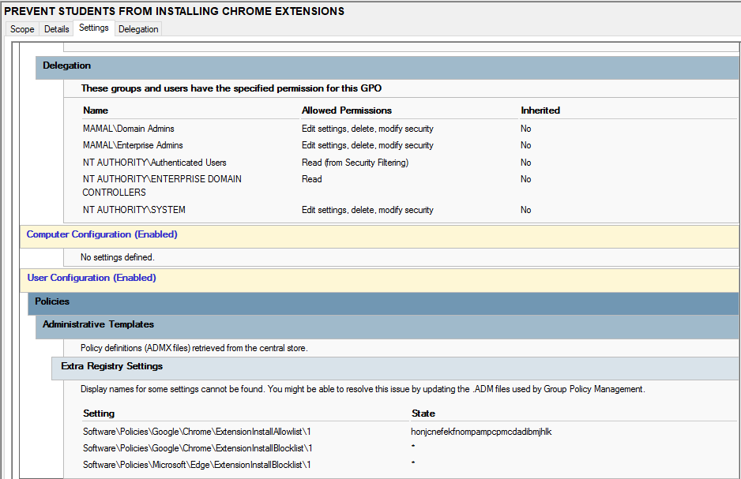

Prevent Chrome Extension Installation
Purpose
This policy restricts users from installing unauthorized Google Chrome extensions. It is used to enhance security, prevent malicious extensions, and maintain a controlled browsing environment within the computer lab.
How it works
The Group Policy enforces restrictions on Chrome extension installation by blocking access to the Chrome Web Store or preventing installation of non-approved extensions. Users are only allowed to use pre-approved extensions defined by the administrator.
How it is applied
- Open Group Policy Management Console (GPMC)
- Edit the User Configuration policy
- Navigate to: User Configuration → Policies → Administrative Templates → Google Chrome → Extensions
- Enable policy: Block installation of extensions
- Optionally define allowed extension IDs (whitelist)
- Apply policy and run
gpupdate /force
Screenshot
Chrome extension restriction policy in Active Directory:
